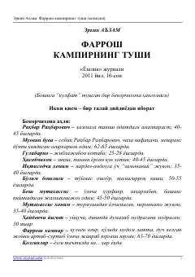

FKIdora hayoti va xodimlarining qiziqarli sarguzashtlariga bag'ishlangan hajviy drama.
Erkin A'zamning ushbu asari bekorchixona ahlining qiziqarli va hajviy hayotini tasvirlovchi ikki qismli komediya dramadir. Asarda turli xodimlar, rahbarlar va oddiy farrosh kampirning o'ziga xos munosabatlari hamda kundalik tashvishlari kulgili tarzda ochib beriladi.